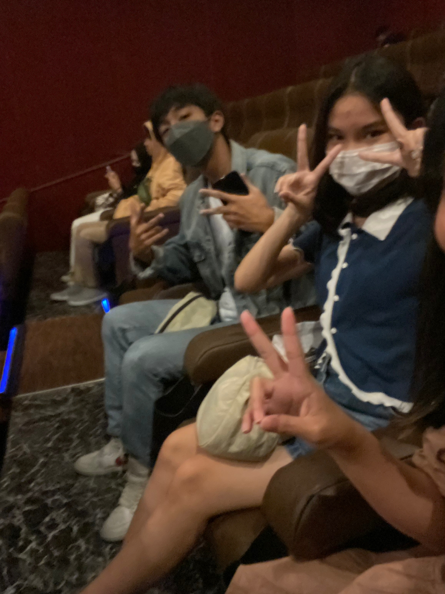
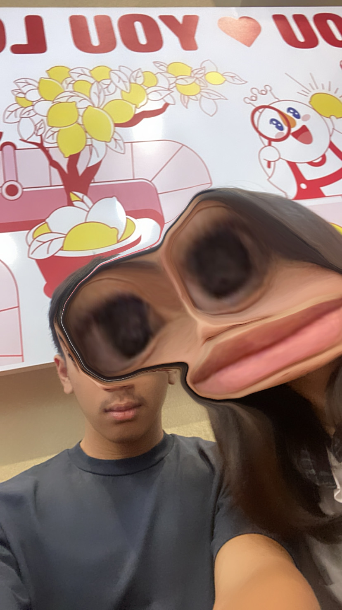
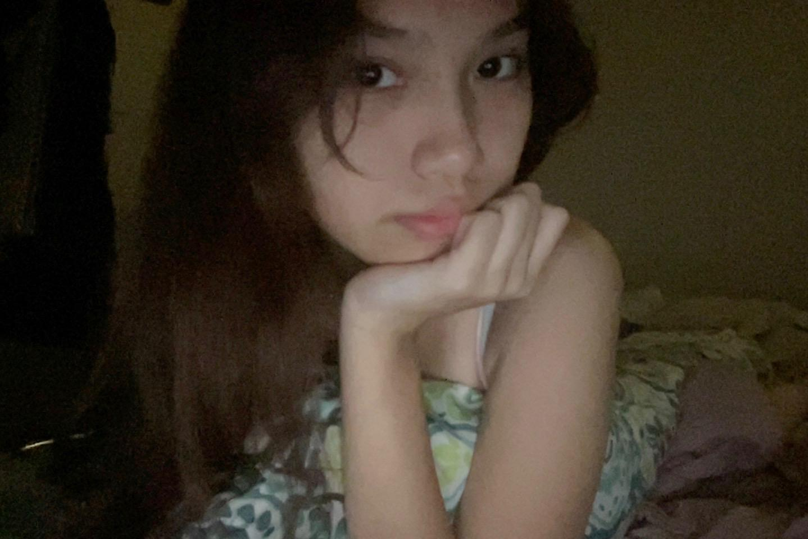
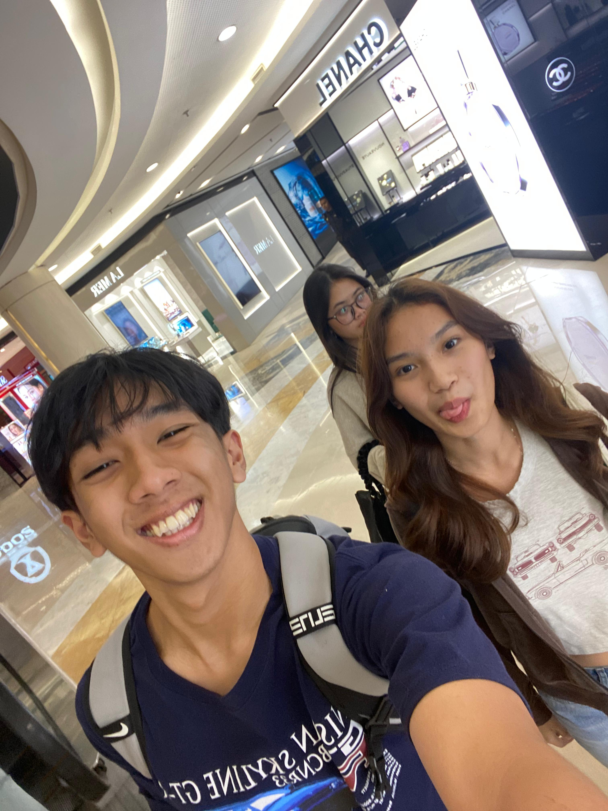
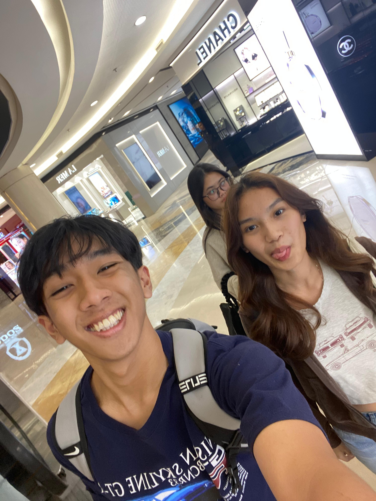

Hello Keiko, this is your boyfriend (duhhh). I can’t believe today marks the start of our relationship (well, sort of). We’ve grown closer and closer throughout the years we’ve known each other. Together, we’ve faced multiple problems, gotten into many fights, and shared countless happy moments. So let’s look back to where it all first started!
(P.S. This letter is grammatically perfect, because you deserve everything perfect.)
With every text, we got to know each other a little more, and the more we texted, the flirtier it got. Even though you were a bit weird 😅 at first, there was something about you that kept me in line. You weren’t the only girl texting me at the time, but you were definitely the one who cared the most about me.

After many hours spent texting, we finally met outside of school — of course, Queena was there. It’s so crazy looking back at it: I was really close with a girl, and then suddenly, you came into the picture. I still remember that day clearly. I had gotten injured and still went to the cinema to watch with you. After the movie, we went to Robucca, and that was the first time I met your mom 😅.


We got a lot closer after that — and then came our first album. I just knew you could really sing (something I didn’t expect), and since I love listening to music, I thought it would be cute to have a playlist together. Especially after we had just confessed to each other.
Oh yeah! About that confession…

HAHAHHA WHERE DO I START.
To be honest, what the fuck was our confession?!?!?! I was overwhelmed with all the butterflies in my stomach and suddenly I just told you that I liked you??? While I hadn’t even moved on from the other girl I was with. Oh my gosh, I was stupid. I realized I was nowhere near ready to start a new relationship — not for myself, and definitely not for you.
(I don’t remember when I told you I was taking my time, but...) I did take my time to settle my feelings and to try to love you as much as I could. While it was quite tough, I felt so much happiness coming from you, and I felt truly loved. Also the start of my notes about you.

The way you made me feel, and how patient you were during those five months, gave me the assurance I had long needed. I felt comfortable with you, and I felt loved. With those two combined, I was confident that I was ready to start a new relationship.
After getting back from Australia, I asked you to be my girlfriend through a note and a plushie. When I gave you that note, I freaked out and got really shy — even though I knew you’d say yes.



And here we are now, celebrating year number 2 as a couple.
Honestly, dating is soooo exhausting, but having you as my significant other makes it so much less tiring. Of course, there have been moments when our relationship was literally on thin ice — one more stomp and it could’ve been gone. But we both knew that. We both knew what either of us could’ve done that might end it — and so it never did.
That alone shows how much we want to be with each other, and how much we want this to be the high school sweetheart story.
Here it is — the part where I tell you how much I love you. Well, there are really no words to describe how much you mean to me. Despite all the lows we’ve faced, you’ve always managed to bring me back to loving you again. I think I’ve found my opposite pole — the way I’m attracted to you is something I’ve never felt before in my life. There’s just something about you. I don’t know what it is, but you are special.
You made me feel loved, you cared about me, you made me happy. I really hope I’ve done those three things for you as well — because you are the most deserving girl in my world. You are the girl I found beautiful even when I was a kid. Literally, ask my mom how I used to describe a pretty girl back then — I’m sure you’ll check the majority of the boxes.
You are perfect for me, and I hope I’m perfect for you too. Whatever is ahead, I want to go through it with you. I want you to be there when I buy my first car with my own money. I want you to be the one I consider when building a house or picking furniture. Whatever it is — I just want it to be you. I love you to the moon and back, and to the moon again, and back again, millions and millions of times.
I really do love you, Keiko. You’re perfect for me.




 
